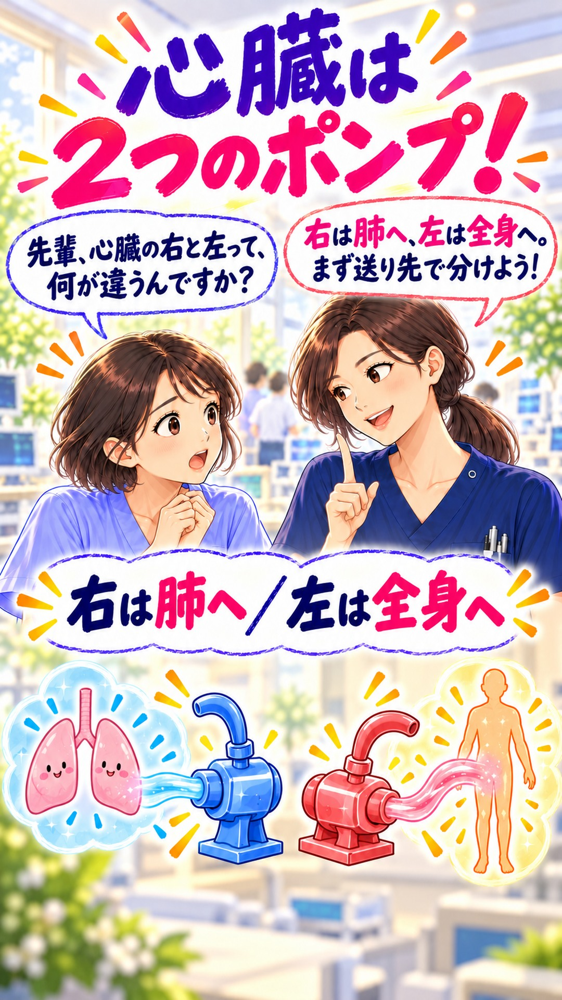

1. 心臓は ２つのポンプ！

後輩：先輩、心臓の右と左って、何が違うんですか？
先輩：右は肺へ、左は全身へ。まず送り先で分けよう！
右は肺へ、左は全身へ。先輩と後輩の会話で、心臓のしくみをひとつずつ。
画面の真ん中を押すと、音声付き動画が再生します。
動画ファイルを開くイラストのポンプ・部屋・扉は、しくみを理解するための比喩です。弁の位置と血液の流れは、上の順番で確認してください。動脈は心臓から出る血管、静脈は心臓へ戻る血管です。血液そのものが青いわけではありません。
内容照合：米国国立心肺血液研究所（NHLBI）How Blood Flows through the Heart
制作時照合日：2026年10月1日（日本時間）。臨床での個別の判断を示す教材ではありません。

後輩：先輩、心臓の右と左って、何が違うんですか？
先輩：右は肺へ、左は全身へ。まず送り先で分けよう！
後輩：心房と心室、名前がごちゃごちゃになります。
先輩：心房は受け取り、心室は送り出す部屋。右と左に１組ずつあるよ。
後輩：右心室から出た血液は、どこへ行くんですか？
先輩：肺動脈で肺へ。酸素を受け取って、肺静脈で左心房へ戻るよ。
後輩：肺から帰ってきた血液は、次にどうなるんですか？
先輩：左心房から左心室へ。大動脈で全身に酸素を届け、大静脈で右心房へ戻るよ。
後輩：血液が、後ろへ戻らないのはどうしてですか？
先輩：弁が逆流を防ぐから。右は三尖弁と肺動脈弁、左は僧帽弁と大動脈弁だよ。
後輩：動脈なら、必ず酸素が多いんですよね？
先輩：名前は心臓から出るか、戻るかで決まるよ。肺動脈は酸素が少なく、肺静脈は多いんだ。
後輩：フォローしていただくと励みになります。よろしくお願いします。